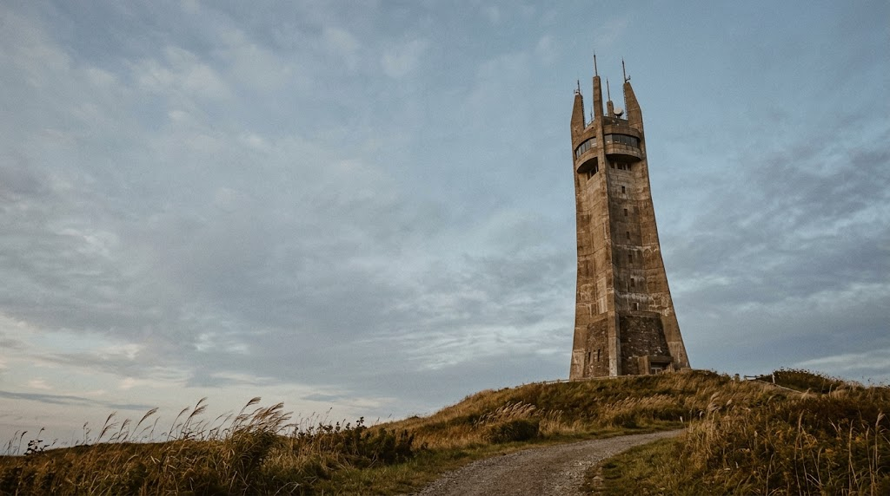
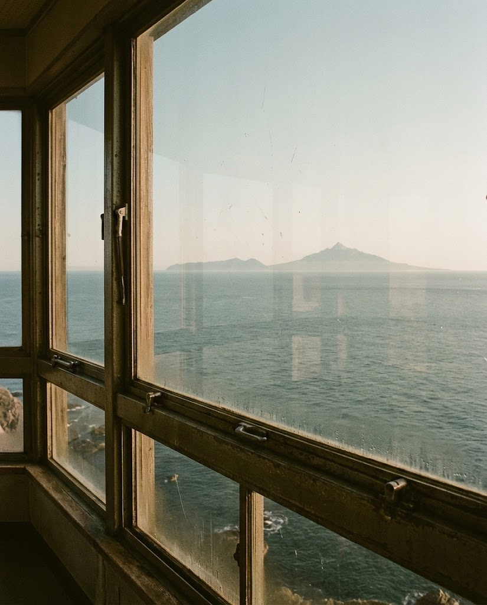
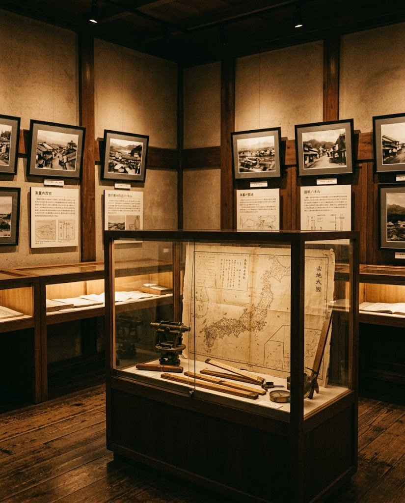

★★★★★
稚内市街から宗谷岬、利尻島、礼文島、遠くサハリンまで見渡せる展望塔です。当日は快晴で、サハリンもはっきり見えました。展望台のつもりで寄ったところ、1〜2階の資料館は思いのほか立派で、とても濃い内容でした。

稚内市開基百年記念塔・稚内市北方記念館

稚内公園の丘にそびえる記念塔の展望台からは、稚内の街並みと宗谷岬、利尻島、礼文島まで見渡せます。空気の澄んだ日には、遠くサハリンの島影を望むこともできます。
宗谷に役場がおかれた1879年を稚内の始まりとし、開基百年を記念して1978年に建てられた塔です。

塔内は稚内市北方記念館になっています。この地域の先史時代から、伊能忠敬・間宮林蔵による北海道・樺太の地形調査、樺太と日本のつながりまで、北の歴史を順にたどれます。
戦前の写真や説明パネルも充実しています。展望台と思って訪れて、展示の濃さに驚く方も少なくありません。
稚内市街から宗谷岬、利尻島、礼文島、遠くサハリンまで見渡せる展望塔です。当日は快晴で、サハリンもはっきり見えました。展望台のつもりで寄ったところ、1〜2階の資料館は思いのほか立派で、とても濃い内容でした。
塔内では、稚内の先史からの歴史、伊能忠敬・間宮林蔵の調査、樺太と日本の関係などを学べます。戦前の写真や説明パネルも充実していました。車がない場合は、タクシーで上がり、帰りは遊歩道を歩いて下るのがおすすめです。